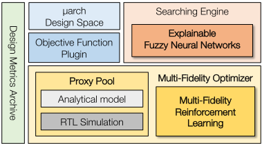
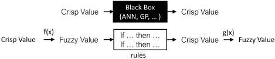
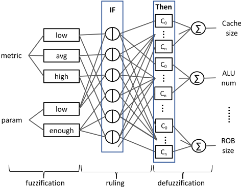
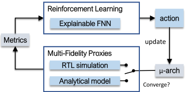
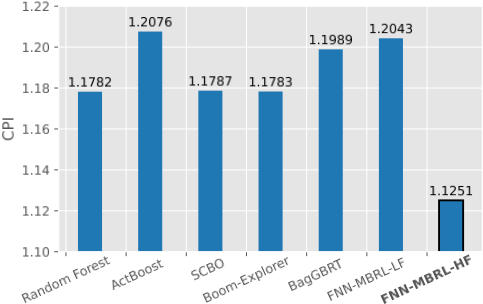
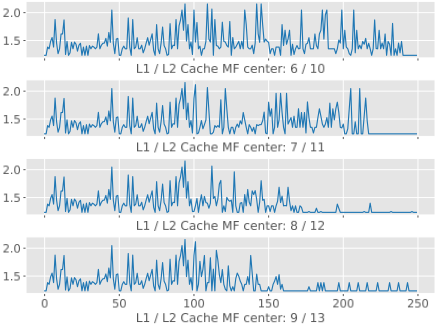
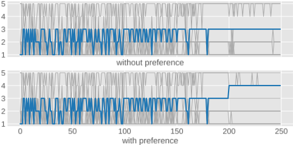

面向微架构设计空间探索的可解释模糊神经网络与多保真强化学习方法
论文针对处理器微架构设计空间庞大、现有 DSE 算法（如 Bayesian Optimization 与集成学习）黑盒不可解释的问题，提出以 Fuzzy Neural Network（FNN）为搜索引擎的可解释 DSE 框架。FNN 将模糊 if-then 规则与神经网络结构结合，用强化学习自动生成设计规则，设计者可直接检查规则、按应用特征初始化隶属函数中心并向规则库注入设计偏好。为提升效率，方法采用多保真 RL：低保真阶段利用可微解析模型（约 0.1 ms/设计）的梯度方向引导动作选择，高保真阶段用 Chipyard 生成 BOOM RTL 并以 VCS 仿真精调。在 300 万规模设计空间、6 个 benchmark 上，仅 9 次 HF 仿真即在通用场景显著优于 Boom-Explorer、BagGBRT、ActBoost、SCBO 等基线，HF 结果较 LF 显著改善，部分 benchmark 接近采样最优。
现代处理器微架构设计空间庞大，人工配置调优困难；现有自动 DSE 算法（Bayesian Optimization、集成学习等）缺乏可解释性，设计者难以理解算法决策依据、难以从中提炼设计洞见或进行干预；而可解释的模糊规则 DSE 又因规则库构建成本随设计空间指数增长、且需要模糊逻辑专业知识而难以实用。此外，单一评估代理（解析模型快但不准、RTL 仿真准但慢）导致 DSE 要么结果不可靠要么耗时过长。
提出 FNN + 多保真 RL 的 DSE 框架：(1) FNN 用模糊逻辑（隶属函数、t-norm、加权平均去模糊化）构成可微规则系统，输入设计指标分为 low/avg/high、设计参数分为 low/enough，输出各参数的增大评分，每步增大评分最高的参数；权重由 policy gradient 训练，实现规则自动生成。(2) 低保真阶段基于解析模型（约 0.1 ms/设计）做 model-based RL，仅利用梯度方向（只允许负梯度参数被增大）而非梯度幅值，并采用激进奖励函数保证全局寻优。(3) 高保真阶段从 LF 收敛设计与观测最优设计子集出发，用 RTL 仿真（Chipyard 生成 BOOM、VCS 仿真、McPAT 估面积）继续训练，修改奖励函数保证两阶段平滑过渡，且 HF 阶段动作不再受解析模型约束。(4) 支持规则自动提取与检查、基于应用特征初始化 MF 中心、直接向规则库注入设计偏好。
设计空间规模 300 万（3 million），6 个 benchmark（dijkstra、mm、fp-vvadd、quicksort、fft、ss）在线评估；HF 相对 LF 的 regret 比值显示 HF 全面改善结果，mm、quicksort、fft 几乎达到采样最优 ˜opt（采样最优基于每个 benchmark 在有希望区域至少 500 个采样点）
通用场景（6 benchmark 平均、面积约束 8 mm²）下，仅用 9 次 HF 仿真（与基线 10 次 HF 预算总时长对齐，HF 仿真约 2 小时/次），5 个随机种子下最优 CPI 均值显著优于 Boom-Explorer、BagGBRT、ActBoost、SCBO 与 Random Forest
解析模型评估约 0.1 ms/设计，HF RTL 仿真约 2 小时/设计，多保真方法将昂贵 HF 仿真次数压缩到个位数
可解释性实验：自动提取的模糊规则与体系结构常识一致；基于应用数据规模提高 MF 中心初始化可加速收敛且所有设置最终收敛；成功将 decode width=4 偏好注入 FNN，使原本收敛到 3 的 fp-vvadd 收敛到 4
相对已有工作的区别：(1) 用可微 FNN 替代 BO/GBRT 等黑盒代理，DSE 经验以自然语言式模糊规则呈现，可检查、可注入偏好，且规则由 RL 自动生成而非人工构建，克服了模糊规则 DSE 规则库构建成本高、需模糊逻辑专长的缺陷；(2) 提出多保真 MBRL：不同于传统 MBRL 直接用模型梯度幅值更新参数，本文仅用梯度方向筛选可增大参数以应对解析模型梯度不准的问题；(3) 设计 LF→HF 平滑过渡的奖励函数，HF 阶段不受解析模型约束，可探索 LF 阶段被忽略的设计。
相关度级别：high
命中能力域：2.1 IP 架构与微架构 | 2.7 EDA/验证自动化与 AI 辅助
理由：直接命中 2.1 的 workload-driven 性能建模与面向 PPA 的架构权衡：论文在面积约束下以 6 个 benchmark 驱动最小化 CPI，其「解析模型粗筛 + RTL 仿真精调」的多保真流程与团队在 LPDDR/HBM4/UCIe 等 IP 架构定义中先性能模型后 RTL 仿真的工程实践高度一致；同时命中 2.7 的 AI 辅助设计自动化，FNN 的可解释规则输出、偏好注入机制与开源框架对团队沉淀架构探索方法学有直接借鉴价值。论文实验对象是 BOOM 处理器核而非存储/互连 IP，但方法学可迁移到 IP 参数空间探索。
建议动作：深入精读并做内部分享
面向微架构设计空间探索的多保真度强化学习可解释模糊神经网络
Hanwei Fan †, Ya Wang †, Sicheng Li §, Tingyuan Liang †, Wei Zhang ‡
† ‡ 香港科技大学，中国香港特别行政区 § 阿里巴巴集团（美国），美国加利福尼亚州森尼韦尔
† {hfanah, ywangmu, tliang}@connect.ust.hk，§ sicheng.li@alibaba-inc.com，‡ wei.zhang@ust.hk
随着处理器的持续发展，现代微体系结构设计日益复杂。庞大的设计空间给人类设计者带来了巨大挑战，使得设计空间探索（DSE）算法成为 𝜇-arch 设计的重要工具。近年来，人们在 DSE 算法的开发方面付出了诸多努力，并取得了可喜的成果。然而，现有的 DSE 算法（例如贝叶斯优化和集成学习）存在可解释性差的问题，阻碍了设计者对决策过程的理解。为解决这一局限，我们提出利用模糊神经网络从 DSE 过程中归纳并总结知识与洞见，从而增强可解释性与可控性。此外，为提高效率，我们引入了一种多保真度强化学习方法，该方法主要使用廉价但精度较低的数据进行探索，从而大幅减少对昂贵数据的依赖。实验结果表明，我们的方法在非常有限的样本预算下取得了优异的结果，并成功超越了当前最先进水平。我们的 DSE 框架已开源，可在 https://github.com/fanhanwei/FNN_MFRL_ArchDSE/ 获取。
在当今时代，处理器不可或缺，承担着多样化的工作负载。为了在不同应用场景下实现最优性能，处理器需要不同的微体系结构（𝜇-arch）配置。然而，庞大的设计空间给人类设计者手动开展设计空间探索（DSE）带来了巨大挑战。近年来，研究者们尝试了多种方法，以推动使用自动 DSE 算法来取代手动 𝜇-arch 配置调优。早期工作 [6, 9] 提出了结合统计采样与回归模型的经典 𝜇-arch DSE 框架。这类方法随机选取少量代表性样本来拟合一个能够快速预测设计指标的回归模型，然后据此选择
‡ 通讯作者
* 本工作部分受到香港研究资助局优配研究金（General Research Fund，项目编号 16213422）的资助。
允许免费制作本作品部分或全部内容的数字或纸质副本以供个人或课堂使用，前提是这些副本并非为牟利或商业优势而制作或分发，且副本在首页带有本声明及完整的引用信息。本作品中第三方组件的版权必须得到尊重。对于所有其他用途，请联系所有者/作者。
© 2024 版权归所有者/作者所有。
ACM ISBN 979-8-4007-0601-1/24/06

最有前景的设计，从而减少需要考察的样本数量，提高 𝜇-arch DSE 的效率。随后，ActBoost[10] 对该框架进行了改进，使用 Adaboost 作为回归模型以获得更准确的指标预测，同时利用主动学习（active learning）来提高采样效率。最近，Boom-Explorer[1] 提出使用基于深度核的高斯过程 [18] 的贝叶斯优化（Bayesian Optimization，BO）来解决 𝜇-arch DSE 任务，以高样本效率取得了当前最先进的结果。此外，[17] 提出使用基于 bagging 的 GBRT 作为回归模型，并取得了优异的结果。
然而，现有的 𝜇-arch DSE 算法缺乏可解释性，使设计者难以理解算法决策背后的依据，限制了他们从中获取洞见或对这些算法保持掌控的能力。一方面，算法在 DSE 过程中积累的经验与知识难以可视化和解读，设计者在进一步优化设计时难以加以参考。另一方面，这些算法固有的随机性和黑箱特性使其行为难以预测，阻碍设计者根据特定搜索需求对算法进行调整。因此，迫切需要开发对人类设计者而言更具可解释性且更易用的 DSE 算法。
为解决可解释性问题，研究者开发了基于模糊规则的 DSE 算法 [5, 20]。这类算法基于如下观察：人类设计者会运用其在计算机体系结构方面的知识与经验来优化设计，并将这些专业知识嵌入到一组用于指导 DSE 过程的模糊规则之中。由此得到的基于规则的系统既能取得具有竞争力的 DSE 结果，同时对设计者而言仍保持为白盒模型。然而，随着设计空间的增长，规则数量呈指数级增加，导致构建规则库的成本高昂。此外，设计有效的规则需要具备模糊逻辑系统方面的专业知识，这对硬件设计者来说可能颇具挑战。因此，基于模糊规则的 DSE 算法很少被采用。为解决这一问题，我们提出使用模糊神经网络（Fuzzy Neural Networks, FNN）[7]，这是一类融合了模糊逻辑的人工神经网络。FNN 可以通过强化学习（Reinforcement Learning, RL）进行训练，从而自动获得设计规则 [12]，进而增强基于模糊规则的 DSE 算法的实用性。
此外，现有的 DSE 算法通常使用单一代理来评估微体系结构（𝜇 -archs）的设计指标，这可能导致结果不准确，或使 DSE 过程耗时冗长。常用的评估代理包括解析模型 [8] 和 RTL 仿真器 [15]。解析模型采用数学公式来评估设计指标，具有高计算效率和快速的评估速度。然而，其固有的简化假设以及与实际架构之间的高度抽象往往会损害准确性。另一方面，RTL 仿真器是一种逐周期模拟处理器行为的软件工具，能够提供高度准确的估计，但代价是巨大的时间开销。在实践中，设计者通常先使用快速的解析模型在庞大的设计空间中定位感兴趣的区域以节省时间，然后再使用 RTL 仿真器进行细粒度调优以确保结果的准确性。这一常见做法启发我们开发一种多保真度 RL 算法，该算法融合了解析模型和 RTL 仿真两方面的洞见，旨在显著减少时间消耗的同时获得准确的结果。作为对人类设计者 𝜇 -archs 调优过程的模仿，FNN 与多保真度 RL 相结合的 DSE 框架保持了出色的可解释性。
我们提出的框架如图 1 所示。我们希望强调以下几项贡献：
模糊神经网络（FNN）是一种将模糊逻辑原理与神经网络结构相结合的混合模型。它是一种强大的工具，能够同时利用数值信息和语言信息来解决复杂问题。在本节中，我们将介绍 FNN 的基础知识，以及我们如何将其应用于 𝜇 -arch DSE。
模糊逻辑 [19] 采用模糊规则来描述变量之间的关系。这些模糊规则以“如果-那么”（if-then）语句的形式构建。例如，此类规则的一个实例可以是“如果每指令周期数（cycle per instruction, CPI）为‘高’且缓存大小为‘小’，那么缓存组数应当‘增加’”。在此语境中，“如果”部分（例如，CPI 为高且缓存大小为小）被称为前件（antecedent），而“那么”部分（例如，缓存组数应当增加）被称为后件（consequent）。所使用的形容词（高、小、增加）被称为模糊变量（fuzzy variables）。

形式上，模糊规则 𝑅 𝑖 可以写作：
其中 𝑥 1 , . . . , 𝑥 𝑛 为前件，𝑦 为后件，𝐴 𝑖 1 , . . . , 𝐴 𝑖𝑛 , 𝐵 𝑖 为模糊集。
模糊变量将数值抽象为更易于理解的术语，在规则与用户之间提供了友好的交互接口。这使得规则特别适合用于封装人类设计师的知识与经验。清晰值（数值）与模糊值之间的转换由隶属度函数（membership functions, MFs）完成。这些 MFs 是可以呈现多种形式的数学函数，例如 Sigmoid 函数、高斯（Gaussian）函数和 Bell 函数。这一转换过程称为模糊化（fuzzification），它计算每个清晰值对模糊集的隶属度（ 𝜇 ）。隶属度的取值范围为 0 到 1，表示清晰值属于某个模糊集的程度。值得注意的是，一个清晰值可以同时属于多个模糊集，但具有不同的 𝜇 。形式上，清晰值 𝑥 对模糊集 𝐴 的 𝜇 可以计算为 𝜇 𝐴 ( 𝑥 ) 。
规则推理过程会激活包含所使用模糊集的规则，并通常使用 t-范数算子（例如 min 算子或乘积算子）来计算规则 𝑅 𝑖 的激活强度，其表达式为：
其中 𝑇 为 t-范数算子。
最后，去模糊化（defuzzification）过程将模糊结果转换回清晰值，即后件。随后，输出为所有被激活规则结果的加权平均值，表示为：
其中 𝑦 𝑖 为各规则的清晰值。
如图 2 所示，模糊逻辑的双向转换过程使得决策能够以可解释的自然语言形式进行，而黑盒方法仅使用清晰值进行运算，缺乏透明度。
Despite the benefits brought by fuzzy logic, this method is not widely adopted for DSE due to the difficulty in building the fuzzy rule base. Therefore, it is important to automate the rule-making process. Fortunately, fuzzy logic shares very similar computation patterns with neural networks and thus can be formulated into FNNs. Fig. 3 shows the structure of FNNs, which implement the fuzzy logic process through five distinct layers:

The weights of the FNNs have two parts, one of them being the consequent crisp values. The other part of them is the hyperparameters of the MFs, e.g., the center of Sigmoid and Bell. These hyperparameters represent the range of each fuzzy value. For instance, if 'CPI high' uses the Sigmoid function as its MF and the center of the Sigmoid function is 5, this implies that a CPI value above 5 is considered 'high'. On the other hand, if the 'CPI avg' uses the Bell function as its MF and the center of the Bell function is 3, this suggests that a CPI value around 3 is considered 'average'.
As the entire FNN is differentiable, its weights can be updated by gradient descent, leading to the desired automatic rule-making.
为了使模糊神经网络（FNN）适用于设计空间探索（DSE），我们进行了一系列调整。输入的设计指标被划分为"low"、"avg"和"high"三类，分别对应 Inverse Sigmoid、Bell 和 Sigmoid 隶属度函数（MFs）。输入的设计参数仅被划分为"low"和"enough"两类，分别采用 Inverse Sigmoid 和 Sigmoid 隶属度函数。这些隶属度函数的中心可以通过对指标刻度进行等分来定义，也可以使用自定义设置以实现更快的收敛。然而，中心的剧烈变化可能会激活不同的规则，从而使先前的训练失效。为避免这种情况，我们禁止对设计指标的中心进行反向传播，因为它们在梯度下降过程中容易发生大幅变化。而输入设计参数的中心则会自动更新，以促进更好的覆盖，因为 FNN 的数学特性会缓和其变化幅度。
每条规则的前件包含 FNN 的所有输入，且前件的所有组合都会有对应的规则。因此，规则数量高达 3 # 𝑚𝑒𝑡𝑟𝑖𝑐𝑠 ∗ 2 # 𝑝𝑎𝑟𝑎𝑚𝑠。为了提高效率并便于检查，我们可以合并相关的设计参数，例如将 cache set 和 way 合并为 cache size。
FNN 的输出是所有设计参数的得分。在我们的 DSE 设置中，初始设计是设计空间中最小的 𝜇 -arch，并且在每一步中，由 FNN 给出得分最高的参数会增加 1。因此，规则的"THEN"部分被解释为“得分最高的参数应当增加”。
基于我们所提出的 FNN 的可解释性，设计者可以轻松检查训练结果并掌控训练过程。首先，当训练收敛不佳时，用户可以检查各条规则并发现异常模式，据此可以轻松调整训练设置。例如，如果隶属度函数的中心被更新到超出设计空间的范围，我们可以推断需要降低学习率。此外，如果某条规则表明某个设计参数应当增加，而该参数已经处于较高值，我们可以调整设计空间，使其集中于该参数的较高取值范围。
其次，为了加速训练，可以根据目标应用的明显特征对设计参数的中心进行明智的初始化。例如，如果应用的数据规模较大，可以为 cache size 的中心赋予较高的值。
此外，FNN 还允许我们将自身偏好直接融入规则库。例如，若我们希望偏向译码宽度（decode width）为 4 的设计，就可以在规则的前件（antecedent）部分将 3 定义为“低”（low），将 4 定义为“足够”（enough）；随后再调整相应的后件（consequence），以便在译码宽度不足时将其提高。这些特性增强了 FNN 的灵活性与易用性，使其有别于黑盒方法。支持上述优点的实证证据将在第 4 节中给出。
考虑到在实际芯片设计场景中，设计者往往需要在有限的芯片面积内优化处理器性能，我们提出的算法的目标是在给定面积约束下最小化每指令周期数（CPI）指标。在每一回合（episode）中，我们逐步增大处理器规模，直至达到面积上限，从而确保所有采样得到的设计都是有效的。在每一步中，我们随机选择一个设计参数进行增大，并使用快速面积模型评估面积。一个回合中最终设计的 CPI 即为该回合内所有动作的奖励，我们使用策略梯度 [14] 来更新 FNN。
基于这一强化学习（RL）设定，训练一个 FNN 将消耗大量样本，而这些样本的设计指标都需要进行评估。为了支持敏捷开发，设计者通常首先在计算高效的解析模型上进行设计空间探索（DSE），以找出设计空间中有前景的区域。随后，设计者可以进一步使用高保真度（HF）仿真在更窄的空间内进行局部搜索。人们期望这样的设计流程能够被自动化，这启发我们开发一种多保真度 RL 算法来训练 FNN。为实现这一目标，我们将 DSE 过程划分为低保真度（LF）阶段和高保真度（HF）阶段。
LF 阶段负责寻找设计空间中有前景的区域，这一过程需要大量数据的支撑。为了快速获得每指令周期数（CPI）数据，我们采用 [8] 中提出的解析模型。给定设计参数和目标基准测试的剖析（profiling）结果，该模型基于处理器的行为抽象来估计 CPI，每个设计约需 0.1 ms。有趣的是，解析模型通常是可微的，因为它们主要由数学计算构成。对于查找表这类不可微的操作，我们可以拟合严格遵循表格变化趋势的线性函数来获取梯度。因此，我们可以利用解析模型的梯度来引导 DSE。
传统的基于模型的强化学习（MBRL）[13] 直接利用模型的梯度来更新神经网络参数，这要求解析模型能够准确反映设计参数之间的关系。然而，对于常规 MBRL 而言，梯度较大的参数总是会优先被增大，这就要求解析模型提供高度精确的梯度。由于处理器解析模型的非线性以及对不可微组件的拟合，模型的梯度只能保证正确的增大或减小趋势，而无法反映每个设计参数的重要性。如果采用传统方法，梯度较大的参数将获得更多被增大的机会，但它们未必能带来令人满意的收益。因此，我们提出仅利用梯度来指示更新的方向。具体而言，我们在每一步只允许选择梯度为负的设计参数进行增大，从而始终采取有益的动作并提高采样效率。此外，为了确保 FNN 找到全局最优，我们采用了一种激进的奖励函数设计，如公式 3 所示。
其中，每周期指令数（IPC）为 CPI 的倒数，𝐼 𝑃𝐶 ∗ 是观测到的最高 IPC，𝜖 是一个较小的值，用于确保最优的 IPC 能够获得正的奖励。在我们所有的实验中，𝜖 均为 0.05。
所采用的分析模型依赖瓶颈分析来估计 IPC。然而，其对瓶颈的判断并不总是准确。因此，当分析模型判定某些参数无法提升性能时，我们可能在 HF 仿真中发现，增大这些参数仍然能带来收益。这使我们能够基于 LF 结果，在 HF 阶段充分利用剩余的面积预算。
在 LF 阶段，FNN 会收集观测到的最优设计，并最终收敛到其中之一。为了从 LF 过渡到 HF，我们首先对收敛得到的设计以及观测到的最优设计的一个子集进行 HF 仿真。所得结果分别标记为 𝐼 𝑃𝐶 ℎ 0 和 𝐻。HF 阶段的初始点从 𝐻 中随机采样，随后使用在 LF 阶段收敛的 FNN 来决定动作。注意，HF 阶段中的动作不再受分析模型的限制，因此 HF 阶段可以探索在 LF 阶段被忽略的设计。此外，奖励函数经过修改，以鼓励 FNN 找到比 LF 阶段更好的设计，并确保两个阶段之间的平滑过渡，如公式 4 所示。
图 4 展示了所提出的多保真度 RL 的流程。

我们进行了大量实验以验证所提方法的优越性。在 HF 阶段，我们使用 Chipyard [4] 中的 Boom 生成器来生成采样设计的 RTL 代码，然后使用 VCS RTL 仿真器获得以 1GHz 运行时的 CPI。我们采用 McPAT [11] 对设计的面积进行快速估计。
| Parameters | Candidate values |
|---|---|
| L1 Cache Set | 16, 32, 64 |
| L1 Cache Way | 2, 4, 8, 16 |
| L2 Cache Set | 128, 256, 512, 1024, 2048 |
| L2 Cache Way | 2, 4, 8, 16 |
| nMSHR | 2, 4, 6, 8, 10 |
| Decode Width | 1, 2, 3, 4, 5 |
| ROB Entry | 32, 64, 96, 128, 160 |
| Mem FU | 1, 2 |
| Int FU | 1, 2, 3, 4, 5 |
| FP FU | 1, 2 |
| Issue Queue Entry | 2, 4, 8, 16, 24 |
| Parameters | Candidate values |
为了覆盖不同类型的应用，我们选取 6 个基准测试来评估 CPI，即 dijkstra、矩阵乘法（mm）、浮点向量加法（fp-vvadd）、快速排序（quicksort）、快速傅里叶变换（fft）和字符串搜索（ss）。此外，我们不同程度地增大这些基准测试的数据规模，以避免最优结果集中在较小的 𝜇-arch 设计上。
实验所用的设计空间如表 1 所示。我们选择由分析模型、Chipyard 和 McPAT 共同支持的设计参数。整个设计空间的规模为 300 万。与以往构建离线数据集的工作不同，我们在整个设计空间中在线运行所有实验，以模拟更贴近实际的应用场景。
为了评估我们所提出的方法在面向特定应用的设计使用中的有效性，我们对每个基准测试分别进行设计空间探索（DSE）。对于每个基准测试，我们在有前景的区域中至少采样 500 个点，并将其中最优的一个视为采样得到的最优解 ˜ opt。随后，我们便可以得到遗憾值，其定义为 DSE 的最优结果（记为 𝐷𝑆𝐸 best）与 ˜ opt 之差，即：
我们比较了低保真（LF）与高保真（HF）结果的遗憾值。HF 相对于 LF 的改进由二者遗憾值之比来体现，即：
如表 2 所示，对于所有基准测试，HF 均显著改进了基于 LF 得到的结果，其中 mm、quicksort 和 fft 的结果几乎达到 ˜ opt，这表明了我们所提出的多保真度强化学习（RL）方法的有效性。
| area limit | LF regret | HF regret | Imp. | |
|---|---|---|---|---|
| dijkstra | 10 𝑚𝑚 2 | 0.302 | 0.083 | 3.64 × |
| mm | 7.5 𝑚𝑚 2 | 0.02 | 0.007 | 2.86 × |
| fp-vvadd | 6 𝑚𝑚 2 | 0.156 | 0.025 | 6.24 × |
| quicksort | 7.5 𝑚𝑚 2 | 0.037 | 0.01 | 3.70 × |
| fft | 8 𝑚𝑚 2 | 0.299 | 0.001 | 299.9 × |
| ss | 6 𝑚𝑚 2 | 0.119 | 0.066 | 1.80 × |
| | area limit | LF regret | HF regret | Imp. |
为了评估我们所提出方法在通用设计用途上的有效性，我们进一步在面积约束为 8 𝑚𝑚 2 的条件下，对全部 6 个基准测试结果的平均值进行 DSE。我们将我们的方法与当前最先进的方法进行比较，例如 Boom-Explorer[1]、BagGBRT[17]、ActBoost[10]。我们还纳入了 Scalable Constrained BO[3]，这是贝叶斯优化（BO）领域的一项最新进展，在高维约束 DSE 问题上具有竞争力。此外，我们还纳入了经典基线方法随机森林（Random Forest）[2]。对于所有基线方法，我们允许 10 次 HF 仿真的预算。为确保所有计算预算都用于有效样本，违反约束的样本将被直接赋予较低的奖励且不进行仿真，但 SCBO 除外，因为它需要无效的 HF 结果来进行推断。HF 仿真大约需要 2 小时完成，这与 LF 训练所需的时间相同。为了公平比较，我们的方法仅允许 9 次 HF 仿真，以使运行时间与基线方法相等。我们使用 5 个不同的随机种子运行所有方法，并报告最佳 CPI 的均值。如图 5 所示，我们所提出的方法显著优于所有基线方法。

我们还进行了若干实验来展示我们方法的可解释性。模糊神经网络（FNN）的可解释性最直接地体现在学习结果的基于规则的表达中。为了获得这些规则，我们设计了一个脚本，将 FNN 的计算自动转换为规则。我们首先将矩阵元素映射为规则的模糊值，然后剪除规则中的冗余部分，使其对设计者而言更加清晰。具体而言，1-范数接近 0 的矩阵列被视为冗余。此外，如果"X is high"和"X is low"都声称某参数可以增加，则前件项"X"也是冗余的。我们给出一些规则示例并对其进行简要解释。
这些规则是 FNN 在训练过程中记录下的、能够带来高奖励的决策。由于我们使用解析模型来训练 FNN，这些规则也是对解析模型所提供信息的一种总结。第一条规则意味着，当 L1 缓存容量较大且功能单元（FU）充足时，相对较低的译码宽度可能成为瓶颈。由于更大的 L1 缓存会带来更少的 L1 缺失，且充足的 FU 允许更高的吞吐量，译码器应当能够处理更多指令，这与常识相符。
第二条规则表明，当 L1 缓存足够大而 FU 不足时，我们可以增加整数单元的数量，因为更少的 L1 缺失使得 FU 需要处理更多指令。这里的前件不包含译码宽度，因为当译码宽度为 1 时，解析模型同样会将整数单元识别为瓶颈。
第三条规则表明，当 L1 缓存、重排序缓冲区（ROB）和译码宽度都较大而 FU 不足时，发射队列（IQ）需要增加，因此发射队列（IQ）需要增加。具体解释如下：如果前三个组件较大，将导致更多的在途指令。如果没有足够的 FU，就有必要增加 IQ 表项以避免停顿。

最后一条规则由于解析模型的偏差而显得有悖直觉，该模型假设 ROB 停顿仅由 L3 和 DRAM 访问引起。因此，当 L2 缓存大到足以容纳所有所需数据（忽略预热阶段）从而使缺失率接近 1 时，ROB 停顿便被忽略了。于是，增加 ROB 表项数量被估计为无益。
FNN 可以为所有参数提供此类规则，这使得设计人员能够轻松检查训练结果。最后一条规则揭示了 FNN 的一个局限性，即所归纳规则的质量依赖于信息的来源。如果我们想要构建完美的规则库，就需要精确的数据以及对数据的全面探索，而这将导致收敛非常缓慢。因此，可解释性与效率之间的权衡构成了可解释 DSE 领域研究人员面临的主要挑战。尽管如此，我们的方法在使学习结果可解释方面已被证明是非常成功的。
其次，正如我们在第 2 节中提到的，设计人员可以明智地设定初始参数以促进收敛。我们大幅增加了 dijkstra 的数据规模，并在 L1 和 L2 缓存采用不同初始化的情况下运行我们的方法。如图 6 所示，较高的 MF 中心可实现更快的收敛。重要的是，所有设置最终都收敛了，这展现了我们方法的鲁棒性。
最后但同样重要的是，我们展示了设计人员可以轻松地将偏好插入 FNN 中。我们按照第 2.3 节所述，将对解码宽度 4 的偏好嵌入 FNN 规则库中，并在 fp-vvadd 上进行实验，该基准原本会收敛到解码宽度 3。训练过程中所有 𝜇-arch 参数的变化如图 7 所示，其中蓝线为解码宽度，灰线为其他参数。实验结果表明，我们成功地引导解码宽度达到了 4。与在采样后直接修改参数不同，我们修改的是 FNN 的知识，使 FNN 能够自行生成期望的决策，从而保持了模型学习过程的一致性。
在本工作中，我们提出使用 FNN 作为 𝜇-arch 设计空间探索（DSE）的搜索引擎，使结果对人类设计者而言是可解释的。FNN 由我们提出的多保真度 MBRL 算法进行训练，该算法同时利用解析模型和 RTL 仿真器，以确保结果的准确性并降低时间消耗。实验表明，我们的 DSE 框架取得了最先进的结果，并提供了良好的可解释性。
